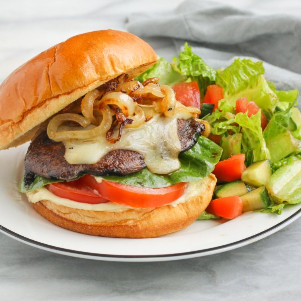

Balsamic Portobello Burger with Caramelized Onions & Side Salad

Total Time
35 min
Nutrition (per serving)
653.4 kcalCalories
20 gProtein
43.8 gCarbs
46.4 gFat
Full nutrition table
| Calories | 653.4 kcal |
| Total fat | 46.4 g |
| Saturated fat | 10.6 g |
| Trans fat | 0.7 g |
| Cholesterol | 39 mg |
| Sodium | 504 mg |
| Carbohydrates | 43.8 g |
| Fiber | 10.2 g |
| Sugars | 18.3 g |
| Protein | 20 g |
| Potassium | 1205.8 mg |
| Calcium | 336.5 mg |
| Iron | 4.3 mg |
| Vitamin A | 898.1 IU |
| Vitamin C | 22.5 mg |
| Vitamin D | 16.3 IU |
Cookware
Ingredients
- 1English cucumber
- 4 clovesgarlic
- ⅔ (8 oz) blockmozzarella cheese
- 4 capsportobello mushrooms
- 1 headromaine lettuce
- 2tomatoes
- 4whole grain buns or rolls
- 2 mediumyellow onions
- balsamic vinegar
- Dijon mustard
- extra virgin olive oil
- garlic powder
- honey
- Italian seasoning
- mayonnaise
- salt
Steps
- Peel, halve, and thinly slice the onions into half rings.2 medium yellow onions
- Preheat a medium saucepan over medium heat.
- Once the pan is hot, add oil and swirl to coat the bottom. Add onions and salt; cook, stirring occasionally, until soft and caramelized, 15-20 minutes.4 tsp extra virgin olive oil
½ tsp salt - Meanwhile, wash and dry the fresh produce.4 caps portobello mushrooms
1 head romaine lettuce
2 tomatoes
1 English cucumber - Peel and mince garlic; place in a large bowl along with oil, vinegar, and Italian seasoning. Whisk to combine the marinade.4 cloves garlic
3 tbsp extra virgin olive oil
3 tbsp balsamic vinegar
2 tsp Italian seasoning - Remove mushroom stems and carefully scrape out the gills. Add to the bowl with the marinade and turn to coat. Set aside.
- Preheat a large skillet over medium-high heat.
- While the skillet heats up, combine mayo, oil, Dijon, garlic powder, and salt in a small bowl. Whisk to combine the aioli and set aside.¼ cup mayonnaise
2 tsp extra virgin olive oil
1 tsp Dijon mustard
½ tsp garlic powder
½ tsp salt - Once the skillet is hot, add mushrooms and cook until soft, 3-5 minutes per side. (Reserve bowl with leftover marinade for the next step.) When mushrooms are cooked, slice the cheese, place on top of mushroom caps, and reduce heat to low. Cover and let cook until cheese melts, 2-3 minutes. Remove from heat.⅔ (8 oz) block mozzarella cheese
- Meanwhile, add oil, vinegar, honey, Dijon, and salt to the bowl with leftover marinade. Whisk to combine the dressing.2 tbsp extra virgin olive oil
4 tsp balsamic vinegar
1 tsp honey
1 tsp Dijon mustard
¼ tsp salt - Separate the lettuce leaves. Set aside 1 large leaf per burger; chop or tear remaining leaves into bite-sized pieces and add to the bowl with the dressing.
- Medium dice one tomato and add to the salad bowl. Thinly slice remaining tomato and set aside.
- Trim and medium dice the cucumber; add to the bowl and toss to combine the salad.
- Toast buns if desired. Spread aioli on bottom half of each bun; layer with reserved lettuce, tomato, mushrooms, and caramelized onions. Close with the top half.4 whole grain buns or rolls
- To serve, divide burgers and salad between plates and enjoy!